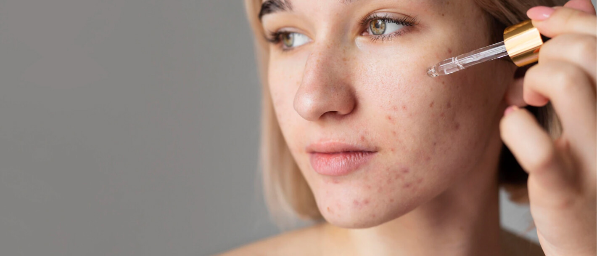
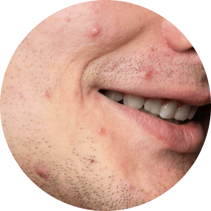
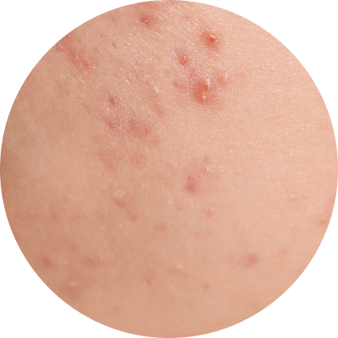
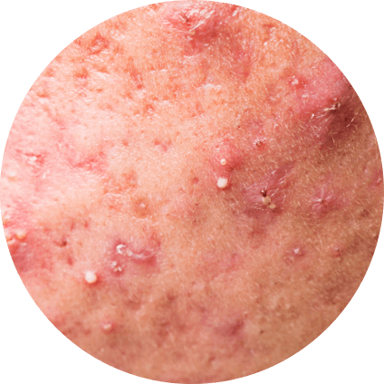
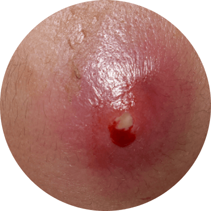

Метрогил / Блог / Популярные мифы про акне: диета, советы и врачи
Популярные мифы про акне: диета, советы и врачи
Все, что нужно знать про акне: причины, симптомы, лечение

11.12.2022

930

5 мин

Акне (или угревая болезнь) – хроническое воспалительное заболевание кожи, проявляющееся открытыми или закрытыми комедонами, папулами или узлами. Внешне акне – это прыщи, заполненные серозным или гнойным содержимым. Обычно высыпания располагаются на лице:
- У подростков в Т-зоне (на лбу, носу, подбородке).
- У взрослых в U-зоне (вокруг рта, на щеках, на подбородке). Реже поражаются верхние части рук, груди и спины.
Выделяют несколько форм акне:

Папулезные
с воспалительными бугорками размером 2-4 мм.

Узловатые
с формированием плотных узлов.

Пустулезные
с преобладанием пузырьков (пустул), наполненных серозным или гнойным содержимым.

Конглобатные
Тяжелая форма, при которой многочисленные папулы и пустулы сливаются, формируя массивное поражение кожи.
- Стойкий подтип – прыщи появляются ещё еще в пубертате и сохраняются с возрастом.
- Акне с поздним началом – появляются, как правило, после 25 лет.
- Рецидивирующие акне – появляются в подростковом возрасте, затем наступает период «затишья», после которого следует обострение. Эти периоды могут длиться годами.
Как формируются прыщи
В образовании акне задействованы четыре основных механизма:
- На фоне гормональных изменений или нарушений усиливается секреция сальных желёзжелез.
- Множество клеток эпидермиса ороговевает («отмирает») и превращается в креатиновые массы, которые «закупоривают» протоки сальных желёз желез и волосяные фолликулы. Из-за этого образуются комедоны (знакомые всем чёерные точки или возвышающиеся над поверхностью кожи бугорки).
- В «закупоренных» волосяных фолликулах размножаются особые бактерии, вызывающие угревую болезнь. Самая известная среди них – Propionibacterium acnes.
- Возникает местная воспалительная реакция: покраснение вокруг комедонов, их заполнение серозным или гнойным содержимым
Чего категорически нельзя делать при акне
В попытках избавиться от прыщей люди идут на радикальные меры. Разберемся, чего не рекомендуется делать:
- Выдавливать прыщи, особенно после распаривания или горячего душа.
- Скрабировать грубыми средствами.
- «Прижигать» прыщи концентрированными спиртовыми растворами или использовать спиртосодержащие продукты для ежедневного ухода.
Лечение акне
Лечение акне – задача врача- дерматолога или дерматокосметолога. При подозрении на акне, не стоит откладывать поход к специалисту. Врач проводит диагностику и выявляет степень тяжести болезни. В зависимости от этого назначает терапию:
- Легкая степень – как правило, назначают топические ретиноиды, бензоил пероксида или азелаиновую кислоту.
- Средняя степень тяжести – могут быть назначены комбинации топических ретиноидов с бензоил пероксидом.
- Тяжёелая степень – добавляют антибиотики в сочетании с терапией препаратами на основе адапалена + бензоила пероксид или с азелаиновой кислотой.
Рекомендации
Если диагностировано акне, нужно придерживаться правил щадящего ухода и бережного отношения к своей коже.
Показано использование специализированных средств, адаптированных для жирной и чувствительной кожи.
Наружные препараты следует наносить регулярно на чистую сухую кожу, не втирая в зоны поражения.
Точечная аппликация также не рекомендуется.
Не рекомендуется естественное ультрафиолетовое облучение, а также нахождение в солярии.
Солнцезащитные кремы и спреи нужно подбирать специально адаптированные для жирной и проблемной кожи.
После окончания курса лечения следует применять поддерживающую терапию.
Также рекомендуем прочитать нашу статью «Мифы про акне: диета, советы, врачи»: – ссылка.
В ней собраны популярные заблуждения насчёет акне, которые помогут лучше разобраться в вопросе лечения и профилактики.
Информация проверена экспертом
Профессор Матушевская Е.В.
автор книги «Акне и розацеа», ». ГЭОТАР-Медиа, 2019 г.
Литература:
- Родионов А. Н. Поражения кожи лица. Диагностика, лечение, профилактика. –— СПб.: Наука и техника, 2012.
- Анисимова М.Ю. Акне с позиции доказательной медицины // Научная статья по специальности «Клиническая клиническая медицина», 2010 г.
- Клинические рекомендации Российского общества дерматовенерологов, 2020.